专题02 线段与角中的八大经典模型（举一反三专项训练）
【北师大版2024】

【模型1 线段上的动点求时间问题】 1
【模型2 线段上的动点定值问题】 4
【模型3 几何图形中动角定值问题】 7
【模型4 几何图形中动角数量关系问题】 10
【模型5 几何图形中动角求运动时间问题】 15
【模型6 几何图形中动角求角度问题】 20
【模型7 线段与角中动态多解问题】 24
【模型8 线段与角中动态新定义问题】 28

模型1：单中点模型
类型 | 单中点模型 | |
条件 | C为AB的中点 | C为AB 上一点，D为BC 的中点 |
图示 | 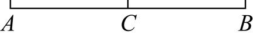 | 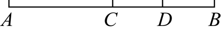 |
结论 | AC=BC= 12AB，AB=2AC=2BC | AD= 12(AC+AB)，AB+AC=2AD |
【模型1 单中点模型】
【例1】（25-26七年级上·全国·单元测试）如图，点C在线段AB的延长线上，BC=2AB，点D是线段AC的中点，AB=2cm，则BD的长度是（ ）
A．3cm B．2.5cm C．1.5cm D．1cm
【答案】D
【分析】本题考查了线段中点的定义、线段的和差．
先求出AC的长，再根据中点的定义求出AD的长，最后根据BD=AD−AB即可得解．
【详解】解：∵AB=2cm，BC=2AB，
∴BC=4cm，
∴AC=AB+BC=6cm，
∵点D是线段AC的中点，
∴AD=12AC=3cm，
∴BD=AD−AB=1cm．
故选：D．
【变式1-1】（24-25七年级上·四川眉山·期末）如图，点C、D是线段AB上的两点，若点D为BC的中点，且AC:BD=1:2，AB=10，则AD的长是（ ）
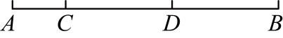
A．5 B．6 C．7 D．8
【答案】B
【分析】本题考查两点间的距离，根据线段中点的定义，线段的和差关系进行计算即可．
【详解】解：∵点D为BC的中点，
∴BD=CD=12BC，
∵AC：BD=1：2
∴可设AC=x，则BD=2x=CD，
∵AB=10，即AC+CD+DB=10，
∴x+2x+2x=10，
解得x=2，
即AC=2，CD=BD=2x=4，
∴AD=AC+CD=3x=6．
故选：B．
【变式1-2】（24-25七年级上·河南郑州·期末）如图，AD=16cm，点C为线段AD上一点，点B为CD的中点，BD=4cm．若点E在直线AD上，且AE=6cm，则BE的长为（ ）

A．6cm B．9cm或3cm C．18cm或9cm D．18cm或6cm
【答案】D
【分析】本题考查了线段的中点，线段的和差，熟练掌握并灵活运用线段的中点和线段的和差是解答本题的关键．分当点E在线段AD上和点E在线段DA的延长线上，两种情形求解即可．
【详解】解：当点E在线段AD上时，
∵点B为CD的中点，BD=4cm，
∴ CD=2BD=8cm，BC=CD=4cm，
∵ AD=16cm，
∴ AC=AD−CD=16−8=8cm，
∵ AE=6cm，
∴ CE=AC−AE=8−6=2cm，
∴ BE=CE+BC=2+4=6cm；
当点E在线段DA的延长线上时，
∵ AD=16cm，BD=4cm，
∴ AB=AD−BD=16−4=12cm，
∵ AE=6cm，
∴ BE=AE+AB=6+12=18cm；
综上所述BE的长为18cm或6cm，
故选：D．
【变式1-3】已知点C是线段AB上的点，AC=13AB，D是直线CB上一点，点E是DB的中点，若CE=4，AD=23AB，则线段AB的长为 ．
【答案】8或24
【分析】本题考查了线段的和差计算，线段中点的性质，分点D在线段AB上，点D在线段BA的延长线上和点D在线段AB的延长线上三种情况讨论，分别画出图形，结合图形，即可求解．
【详解】解：若点D在线段AB上，
∵AC=13AB，AD=23AB，
∴BD=13AB，CD=13AB
∵点E是DB的中点，
∴DE=12×13AB=16AB，
∴CE=CD+DE=13AB+16AB=12AB=4，
∴AB=8；
若点D在线段BA的延长线上，
∵AC=13AB，AD=23AB，
∴BD=AD+AB=23AB+AB=53AB，CD=DA+AC=13AB+23AB=AB，
∵点E是DB的中点，
∴DE=12×53AB=56AB，
∴CE=CD−DE=AB−56AB=16AB=4，
∴AB=24；
若点D在线段AB的延长线上，不符合题意，舍去；
综上可得：线段AB的长为8或24，
故答案为：8或24．
模型2：相邻双中点模型
类型 | 相邻双中点模型 | |
条件 | C为AB上一点，E，F分别为AC，BC 的中点 | C为AB上一点，E，F分别为AB,BC 的中点 |
图示 | 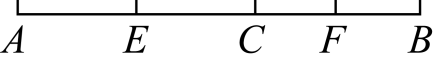 | 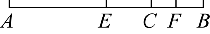 |
结论 | EF= 12AB | EF= 12AC |
【模型2 相邻双中点模型】
【例2】已知M、N、F是线段AB上的点，且FN=10，若点M是线段AB的中点， MN=13AB，F是线段AN的中点，则线段AB的长是 ．
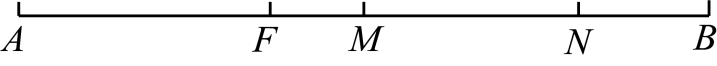
【答案】24
【分析】本题考查了线段的和差，解题的关键是掌握各线段间的关系．根据线段中点的定义可得AM=12AB，AN=2FN=20，进而得到MN=AN−AM=20−12AB，结合MN=13AB，即可求解．
【详解】解：∵点M是线段AB的中点，
∴ AM=12AB，
∵ F是线段AN的中点，
∴ AN=2FN，
∵ FN=10，
∴ AN=2FN=20，
∴ MN=AN−AM=20−12AB，
∵ MN=13AB，
∴ 20−12AB=13AB，
∴ AB=24，
故答案为：24．
【变式2-1】（24-25六年级上·上海·阶段练习）一条直线上依次有A、 B、C、D四个点，如果AC+BD=15cm，BC=3 cm，M和N分别是AC和CD的中点，那么MN= cm；
【答案】6cm
【分析】本题考查了线段中点的性质以及线段长度的计算，解题的关键是根据点的排列顺序明确各线段间的和差关系，利用中点将线段进行等分转化．
根据A、B、C、D的依次顺序，用AB、BC、CD表示出AC和BD的长度，结合已知条件求出AB、BC、CD的和；利用中点性质得到MC和CN分别为AC、CD的一半，进而通过线段和求出MN的长度．
【详解】解：如图，
∵A、B、C、D在一条直线上且依次排列
∴AC=AB+BC，BD=BC+CD
∵AC+BD=15 cm，BC=3cm，
∴AB+BC+BC+CD=15，即AB+BC+CD=15−3=12，
∵M、N分别是AC、CD的中点，
∴MC=12AC=12AB+BC，CN=12CD．
∴MN=MC+CN=12AB+BC+12CD
=12AB+BC+CD
=12×12
=6cm．
故答案为：6．
【变式2-2】（24-25六年级下·山东烟台·期末）已知点A、B、C在同一直线上，若AB=10cm，AC=18cm，点E，F分别是线段AB、AC中点，则线段EF的长是 ．
【答案】4cm或14cm
【分析】本题考查了两点间的距离，利用线段的和差并分类讨论是解题关键．分类讨论：点B在线段AC上时或点B在线段CA的延长线上时，根据中点定义，可得AE与BE的关系，AF与CF的关系，可根据线段的和差，可得答案．
【详解】解：当点B在线段AC上时，
∵E、F分别为线段AB、AC的中点，
∴AE=EB=5，AF=FC=9，
∴EF=AF−AE=9−5=4；
当点B在线段CA的延长线上时，
∵E、F分别为线段AB、AC的中点，
∴AE=EB=5，AF=FC=9，
∴EF=AE+AF=5+9=14；
故答案为：4cm或14cm．
【变式2-3】（24-25七年级上·河南开封·阶段练习）如图，点A，B，C在同一直线上，H为AC的中点，M为AB的中点，N为BC的中点．下列结论中错误的是（ ）
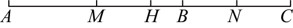
A．MN=HC B．MN=12AC+HB
C．MH=12AH−HB D．HN=12HC+HB
【答案】B
【分析】本题考查了中点的有关计算，线段和差，由H为AC的中点， M为AB的中点，N为BC的中点，则AH=CH=12AC，AM=BM=12AB，BN=CN=12BC，然后结合图形，进行计算，即可判断，掌握线段中点的概念和性质，灵活运用数形结合思想是解题的关键．
【详解】解：∵H为AC的中点，M为AB的中点，N为BC的中点，
∴AH=CH=12AC，AM=BM=12AB，BN=CN=12BC，
∴MN=MB+BN=12AB+BC=12AC，
∴MN=HC，A正确，B错误；
12AH−HB=12AB−BH−BH=MB−HB=MH，C正确；
12HC+HB=12BC+HB+HB=BN+HB=HN，D正确，
故选：B．
模型3：相间双中点模型
类型 | 相间双中点模型 | |
条件 | E，F分别为AC，DB的中点 | |
图示 |
|
|
结论 | EF= 12(AB+CD)= 12(a+b) | |


【模型3 相间双中点模型】
【例3】（24-25七年级上·山东青岛·期末）如图，AB:BC:CD=2:3:4，AB的中点M与CD的中点N的距离是3cm，则BC= ．
【答案】1.5cm
【分析】本题考查了线段中点的性质，求两点之间的距离，一元一次方程的应用，关键是能根据题意得出关于x的方程．
设AB=2xcm，BC=3xcm，CD=4xcm，然后表示出MB=12AB=xcm，CN=12CD=2xcm，然后根据题意列方程求解即可．
【详解】解：∵AB:BC:CD=2:3:4
∴设AB=2xcm，BC=3xcm，CD=4xcm，
∵M是AB的中点，N是CD的中点，
∴MB=12AB=xcm，CN=12CD=2xcm，
∵AB的中点M与CD的中点N的距离是3cm
∴MB+BC+CN=x+3x+2x=3，
∴x=0.5，
∴BC=3x=1.5cm．
故答案为：1.5cm．
【变式3-1】如图，延长线段AB至C使BC=2AB，延长线段BA至D使AD=3AB，点E是线段DB的中点，点F是线段AC的中点，若AB=6cm，则EF的长度为（ ）
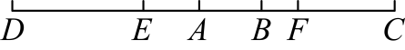
A．15cm B．16cm C．18cm D．20cm
【答案】A
【分析】本题主要考查了线段中点的定义，线段的和差计算，先根据题意得出BD=AB+AD=24cm，AD=3AB=18cm，再根据线段中点的定义得到BE=12BD=12cm，AF=12AC=9cm，进而求解即可．
【详解】解：∵BC=2AB，AD=3AB，AB=6cm，
∴BC=2AB=12cm，AD=3AB=18cm，
∴AC=AB+BC=18cm，BD=AB+AD=24cm，
∵点E是线段DB的中点，点F是线段AC的中点，
∴BE=12BD=12cm，AF=12AC=9cm
∴EF=BE+AF−AB=12+9−6=15cm．
故选：A．
【变式3-2】（24-25七年级上·陕西安康·阶段练习）如图，B, C是线段AD上的任意两点，M是AB的中点，N是CD的中点．若MN=a, BC=b，则AD的长是（ ）

A．2a−b B．2a C．2b+a D．2a−2b
【答案】A
【分析】本题考查线段的中点，线段的和差，掌握相关知识是解决问题的关键．首先根据B，C是线段AD上任意两点，可得BM=AM，CN=DN，所以BM+CN=AM+DN；然后根据MN=a，BC=b，求出BM+CN的值，即可求出AM+DN的值；最后用AM+DN的值加上MN的长度，求出线段AD的长是多少即可．
【详解】解：∵B，C是线段AD上任意两点，M是AB的中点，N是CD的中点，
∴BM=AM，CN=DN，
∴BM+CN=AM+DN；
∵MN=a，BC=b，
∴BM+CN=a−b，
∴AM+DN=a−b，
∴AD=a−b+a=2a−b．
故选：A．
【变式3-3】（24-25七年级上·山东临沂·期末）七年级同学正在举办“线段联欢会”，小明同学出示的节目是：如图，点C为线段AB上一点，AC−BC=6，M是线段AC中点，AM=8，N为线段MB的中点，则CN=（ ）
A．2 B．1 C．1.5 D．3
【答案】B
【分析】本题考查了两点间的距离，线段的和差，先根据中点求出AC=16，MC=AM=8，再求出BC=10，MB=MC+BC=18，然后根据点N为线段MB的中点，由线段的中点定义可得BN长，CN=BC−BN最后由进行计算，即可得出答案．
【详解】解：∵M是线段AC中点，AM=8，
∴AC=2AM=2×8=16，MC=AM=8，
∵AC−BC=6，
∴BC=AC−6=16−6=10．
∴MB=MC+BC=8+10=18，
又∵N为线段MB的中点，
∴BN=12MB=12×18=9，
∴CN=BC−BN=10−9=1．
故选：B．
模型4：半角模型
类型 | 半角模型 |
条件 | ∠AOC=α,∠BOC=β(α>β),∠EOF=α+β2 |
图示 |
|
结论 | ∠AOE+∠BOF=α+β2，∠AOE－∠COF=α−β2 |

【模型4 半角模型】
【例4】如图①所示，∠AOB=120°，将直角三角板的直角顶点放置在O点，OC平分∠AON．

(1)若∠COM=35°，则∠AOM=______，∠BON=______．
(2)如果∠COM=α，∠BON=β，试判断α，β的数量关系，并说明理由．
(3)如图②当直角三角板绕着O点顺时针旋转一定角度，使得OM在∠AOC的内部，ON在∠BOC的外部，若∠COM=α，∠BON=β，α，β是否还存在（2）中的数量关系，若存在，请说明理由，若不存在，请求出α，β的数量关系．
【答案】(1)20°；10°
(2)2α−β=60°；理由见解析
(3)不存在，此时α，β满足2α+β=60°；理由见解析
【分析】本题主要考查了结合图形中角的计算，角平分线的定义，解题的关键是数形结合，熟练掌握角平分线定义．
（1）先根据∠COM=35°，求出∠CON=90°−35°=55°，根据角平分线定义得出∠AOC=∠CON=55°，然后求出结果即可；
（2）根据∠MON=90°，∠COM=α，得出∠CON=90°−α，根据角平分线定义得出∠AON=2∠CON=290°−α=180°−2α，根据120°=180°−2α+β，即可得出答案；
（3）根据∠MON=90°，∠COM=α，得出∠CON=90°−α，根据角平分线定义得出∠AON=2∠CON=290°−α=180°−2α，根据∠AON−∠AOB=∠BON，得出180°−2α−120°=β，即可得出结论．
【详解】（1）解：∵∠COM=35°，
∴∠CON=90°−35°=55°，
∵OC平分∠AON，
∴∠AOC=∠CON=55°，
∴∠AOM=55°−35°=20°，∠AON=2∠CON=110°，
∴∠BON=∠AOB−∠AON=120°−110°=10°；
（2）解：2α−β=60°，理由如下：
∵∠MON=90°，∠COM=α，
∴∠CON=90°−α，
又∵OC平分∠AON，
∴∠AON=2∠CON=290°−α=180°−2α，
∵∠AOB=∠AON+∠BON且∠AOB=120°，
∴120°=180°−2α+β，
即2α−β=60°．
（3）解：不存在，此时α，β满足2α+β=60°；理由如下：
∵∠MON=90°，∠COM=α，
∴∠CON=90°−α，
又∵OC平分∠AON，
∴∠AON=2∠CON=290°−α=180°−2α，
∵∠BON=β，∠AOB=120°，
∠AON−∠AOB=∠BON，
即180°−2α−120°=β，
故2α+β=60°．
【变式4-1】如图，已知∠AOB=90°，射线OC绕点O从OA位置开始，以每秒4°的速度顺时针旋转；同时，射线OD绕点O从OB位置开始，以每秒1°的速度逆时针旋转，当OC与OA成180°角时，OC与OD同时停止旋转． 秒后，OC与OD的夹角是30°．

【答案】12或24
【分析】设转动t秒，OC与OD的夹角是30°，分两种情况讨论列方程即可得到结论；
【详解】解：设转动t秒，OC与OD的夹角是30°，
分情况讨论：
①如图1，由题意得：4t＋t＝90−30，
解得：t＝12，
②如图2，由题意得：4t＋t＝90＋30，
解得：t＝24，
∴旋转的时间是12秒或24秒，
故答案为：12或24．
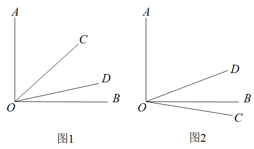
【点睛】本题考查了角的有关计算，注意分情况讨论是解题的关键．
【变式4-2】如图，若∠AOB=m°，∠AOM=n°，∠BOC=4∠BON，OM平分∠CON，则∠MON= °（用含m，n的代数式表示）．

【答案】35m−n
【分析】本题主要考查了角的计算．分别用m，n以及∠MON表示出∠BOM，然后根据两者相等即可求出∠MON．
【详解】解：∵∠BOC=4∠BON，
∴∠CON=3∠BON，
∵OM平分∠CON，
∴∠MON=12∠CON=32∠BON，
∴∠BON=23∠MON，
∴∠BOM=∠MON+∠BON=53∠MON，
又∵∠BOM=∠ABO−∠AOM=(m−n)°，
∴∠MON=35(m−n)°．
故答案为：35m−n．
【变式4-3】如图，在平面内的五条射线OA、OB、OC、OD、OE中，射线OB、OC、OD是逆时针方向排列，∠AOB=2∠COD=2θ0°<θ<90°，射线OE平分∠AOC．

(1)当射线OC、OD都在∠AOB内部，且θ=72°时，如图1．
①若∠DOE=20°，则∠BOC=______°；
②若射线OD平分∠AOE，则∠DOE=______°；
(2)当射线OC、OD分别在∠AOB内、外部时，如图2，求证：∠BOC=2∠DOE；
(3)当射线OC、OD都在∠AOB外部时，如图3，若∠AOD=∠AOB，则∠BOC=______（用含θ的式子表示）．
【答案】(1)①40°；②24°
(2)见解析
(3)3θ
【分析】本题考查了角平分线的定义，角的和差计算：
（1）根据角平分线的定义可得∠AOC=2∠2=2∠3+∠4，①根据题意可得∠2=∠COD−∠DOE=52°，从而得到∠AOC=2∠2=104°，即可求解；②根据射线OD平分∠AOE，可得∠AOE=2∠3=2∠4，进而得到∠COD=3∠3=72°，即可求解；
（2）根据角平分线的定义可得∠AOC=2∠2=2∠3，从而得到∠DOE=∠COD−∠COE=θ−∠2，∠BOC=∠AOB−∠AOC=2θ−2∠2=2θ−∠2，即可求证；
（3）根据∠AOB=2∠COD=2θ0°<θ<90°，可得
∠AOD=∠AOB=2θ，从而得到∠AOC=∠AOD−∠COD=θ，即可求解．
【详解】（1）解：∵射线OE平分∠AOC,
∴∠AOC=2∠2=2∠3+∠4，
①∵θ=72°，∠DOE=20°，
∴∠AOB=2∠COD=2θ=144°,∠DOE=∠3=20°，
∴∠2=∠COD−∠DOE=72°−20°=52°，
∴∠AOC=2∠2=104°，
∴∠BOC=∠AOB−∠AOC=40°，
故答案为：40°
②∵射线OD平分∠AOE，
∴∠AOE=2∠3=2∠4，
∴∠COD=∠2+∠3=3∠3=72°，
∴∠DOE=24°；
故答案为：24°
（2）解：∵射线OE平分∠AOC，
∴∠AOC=2∠2=2∠3，
∴∠DOE=∠COD−∠COE=θ−∠2，
∴∠BOC=∠AOB−∠AOC=2θ−2∠2=2θ−∠2，
∴∠BOC=2∠DOE=2θ−∠2；
（3）解：∵∠AOB=2∠COD=2θ0°<θ<90°，
∴∠AOD=∠AOB=2θ，
∴∠AOC=∠AOD−∠COD=θ，
∴∠BOC=∠AOB+∠AOC=3θ．
模型5：角叠角模型
类型 | 角叠角模型 |
条件 | ∠AOC=α，∠BOD=β |
图示 | 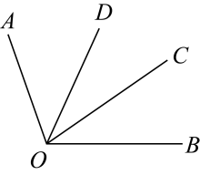 |
结论 | ∠AOB+∠COD=α+β |
【模型5 角叠角模型】
【例5】（24-25七年级上·甘肃武威·期末）已知：如图1，OB、OC分别为锐角∠AOD内部的两条动射线，当OB、OC运动到如图的位置时，∠AOC+∠BOD=100°，∠AOB+∠COD=40°，

(1)求∠BOC的度数；
(2)如图2，射线OM、ON分别为∠AOB、∠COD的平分线，求∠MON的度数．
(3)如图3，若OE、OF是∠AOD外部的两条射线，且∠EOB=∠COF=90°，OP平分∠EOD，OQ平分∠AOF，当∠BOC绕着点O旋转时，∠POQ的大小是否会发生变化，若不变，求出其度数，若变化，说明理由．
【答案】(1)30°；
(2)50°；
(3)∠POQ的大小不会变化，理由见详解．
【分析】本题考查了角的和差计算、角平分线的定义，整体思想等知识点，掌握这些是解题的关键．
（1）根据题目所给条件，结合图形计算，即可得出角度；
（2）根据角平分线的定义计算∠MON的度数；
（3）根据角平分线的定义以及角的和差关系，计算出∠POQ的度数，即可得出∠POQ的大小不会变化．
【详解】（1）解：∵ ∠AOC+∠BOD=∠AOB+∠COD+2∠BOC=100°，∠AOB+∠COD=40°，
∴2∠BOC=60°，
∴∠BOC=30°；
（2）
∵射线OM、ON分别为∠AOB、∠COD的平分线，
∴∠AOM=∠BOM=12∠AOB，∠CON=∠DON=12∠COD，
∴∠CON+∠BOM=12∠COD+∠AOB=12×40°=20°，
∴∠MON=∠BOM+∠BOC+∠CON=20°+30°=50°；
（3）
∠POQ的大小不会变化，理由如下：
∵∠EOB=∠COF=90°，∠BOC=30°，
∴∠EOF=90°+90°−30°=150°，
∵∠AOD=∠AOB+∠BOC+∠COD=40°+30°=70°，
∴∠AOF+∠DOE=∠EOF−∠AOD=150°−70°=80°，
又∵OP平分∠EOD，OQ平分∠AOF，
∴∠AOQ=∠FOQ=12∠AOF，∠DOP=∠EOP=12∠DOE，
∴∠AOQ+∠DOP=12∠AOF+∠DOE=12×80°=40°， ∴∠POQ=∠AOQ+∠DOP+∠AOD=40°+70°=110°．
【变式5-1】已知∠AOB=∠COD，射线OC在∠AOB的内部，按要求完成下列各小题．

(1)尝试探究：如图1，已知∠AOB=90°，∠AOD+∠BOC的度数为________°；
(2)初步应用：如图2，若∠AOB=45°时，求∠AOD+∠BOC的度数，并说明理由；
(3)拓展提升：如图3，若∠AOB=α0°<α<180°，试判断∠AOD+∠BOC与α之间的数量关系，并说明理由．
【答案】(1)180°
(2)90°，理由见解析
(3)2α
【分析】本题考查了角的和差，掌握角度之间的关系是解决本题的关键．
（1）首先根据题意得到∠AOB=∠COD=90°，然后利用角的和差求解即可；
（2）首先根据题意得到∠AOB=∠COD=45°，然后利用角的和差求解即可；
（3）首先根据题意得到∠AOB=∠COD=α，然后利用角的和差求解即可
【详解】（1）∵∠AOB=∠COD=90°
∴∠AOD+∠BOC=∠AOB+BOD+BOC=∠AOB+∠COD=180°；
（2）∵∠AOB=∠COD=45°
∴∠AOD+∠BOC=∠AOB+BOD+BOC=∠AOB+∠COD=90°；
（3）∵∠AOB=∠COD=45°
∴∠AOD+∠BOC=∠AOB+BOD+BOC=∠AOB+∠COD=α+α=2α；
【变式5-2】（24-25七年级上·福建莆田·期末）如图，将一副三角尺的两个锐角（45°角和60°角）的顶点叠放在一起，没有重叠的部分分别记作∠1和∠2，若∠1=23°，则∠2的度数为 ．
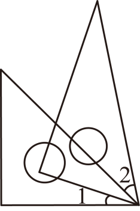
【答案】38°/38度
【分析】本题考查了三角板中的角度计算，熟练掌握角的运算是解题关键．如图（见解析），根据题意可得∠1+∠3=45°，∠2+∠3=60°，则可得∠3=22°，代入计算即可得．
【详解】解：如图，由题意得：∠1+∠3=45°，∠2+∠3=60°，
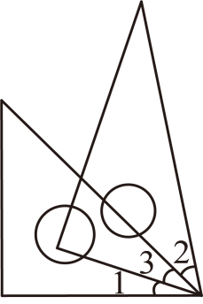
∵∠1=23°，
∴∠3=45°−23°=22°，
∴∠2=60°−∠3=60°−22°=38°，
故答案为：38°．
【变式5-3】如图，一副三角尺AOB与COD的直角顶点O重合在一起．
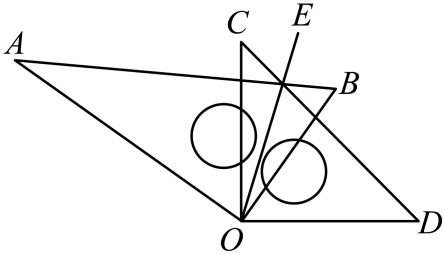
(1)∠AOD+∠BOC=_____________；
(2)试判断∠AOC与∠BOD的大小关系，并说明理由；
(3)若∠AOD=4∠BOC，OE为∠BOC的平分线，求∠AOD，∠DOE，∠AOE的度数．
【答案】(1)180°
(2)∠AOC=∠BOD，理由见解析
(3)∠AOD=144°；∠DOE=72°；∠AOE=72°
【分析】（1）根据题意可得∠AOB=∠COD=90°，从而得到∠AOD+∠BOC=∠AOB+∠COD=180°，即可；
（2）根据∠AOB=∠COD=90°，可得∠AOB−∠BOC=∠COD−∠BOC，即可；
（3）由（1）得：∠AOD+∠BOC=180°，再由∠AOD=4∠BOC，可得∠BOC=36°，可求出∠AOD的度数，再由OE为∠BOC的平分线，可得∠COE=∠BOE=12∠BOC=18°，然后根据∠DOE=∠COD−∠COE；∠AOE=∠AOB−∠BOE，即可求解．
【详解】（1）解：根据题意得：∠AOB=∠COD=90°，
∴∠AOD+∠BOC=∠AOB+∠BOD+∠BOC=∠AOB+∠COD=180°；
故答案为：180°
（2）解：∠AOC=∠BOD，理由如下：
∵∠AOB=∠COD=90°，
∴∠AOB−∠BOC=∠COD−∠BOC，
即∠AOC=∠BOD；
（3）解：由（1）得：∠AOD+∠BOC=180°，
∵∠AOD=4∠BOC，
∴4∠BOC+∠BOC=180°，
解得：∠BOC=36°，
∴∠AOD=4∠BOC=4×36°=144°；
∵OE为∠BOC的平分线，
∴∠COE=∠BOE=12∠BOC=18°，
∴∠DOE=∠COD−∠COE=72°；∠AOE=∠AOB−∠BOE=72°．
【点睛】本题考查余角与补角以及角平分线，根据题意得到∠AOD+∠BOC=180°是正确解答的前提．
模型6：角夹角模型
类型 | 角夹角模型 |
条件 | ∠AOC=n∠EOC，∠BOD=n∠DOF |
图示 | 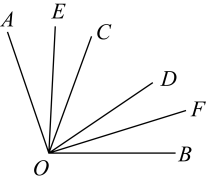 |
结论 | ∠EOF＝1n[∠AOB+(n-1)∠COD] |
【模型6 角夹角模型】
【例6】新定义：如果∠MON的内部有一条射线OP将∠MON分成的两个角，其中一个角是另一个角的n倍，那么我们称射线OP为∠MON的n倍分线，例如，如图1，∠MOP=4∠NOP，则OP为∠MON的4倍分线．

(1)应用：若∠AOB=60°，OP为∠AOB的二倍分线，且∠BOP>∠POA，则∠BOP= ．
(2)如图2，点A，O，B在同一条直线上，OC为直线AB上方的一条射线
①若OP，OQ分别为∠AOC和∠BOC的三倍分线（∠COP>∠POA，∠COQ>∠QOB），已知∠AOC=120°，则∠POQ= ．
②在①的条件下，若∠AOC=α，∠POQ的度数是否发生变化？请说明理由．
【答案】(1)40
(2)①135；②不变，理由见解析
【分析】本题考查了新定义，几何图形中角度的计算，正确理解新定义的内容是解题的关键．
（1）根据题意可得：∠BOP=2∠AOP，∠BOP+∠AOP=60°，进而得出答案；
（2）①由题意可得：∠COP=3∠AOP，∠COQ=3∠BOQ，根据∠AOC=120°，得出∠AOP=90°，∠BOQ=45°，再求解即可；
②不变，根据题意得出∠COP=34∠AOC，∠COQ=34∠BOC，再代入即可得出答案；
【详解】（1）∵∠AOB=60°，OP为∠AOB的二倍分线，且∠BOP>∠POA，
∴∠BOP=2∠AOP，∠BOP+∠AOP=60°，
∴∠AOP=20°，
∴∠BOP=40°，
故答案为：40；
（2）①∵OP，OQ分别为∠AOC和∠BOC的三倍分线（∠COP>∠POA，∠COQ>∠QOB），
∴∠COP=3∠AOP，∠COQ=3∠BOQ，
∵∠AOC=120°，
∴∠BOC=60°，
∴∠AOP=30°，∠BOQ=15°，
∴∠COP=90°，∠COQ=45°，
∴∠POQ=∠POC+∠COQ=135°，
故答案为：135；
②不变，
∵OP，OQ分别为∠AOC和∠BOC的三倍分线，∠COP>∠POA，∠COQ>∠QOB，
∴ ∠COP=34∠AOC，∠COQ=34∠BOC，
∴∠POQ=∠COP+∠COQ=34∠AOC+34∠BOC
=34∠AOC+∠BOC=34∠AOB=34×180°=135°．
【变式6-1】如图，OC平分∠AOB，OD、OE三等分∠AOB，已知∠COE=15°，求∠AOB的度数．

【答案】90°
【分析】本题考查了角平分线及三等分线的定义，角的和差，由角平分线及三等分线的定义可得∠BOC=12∠AOB，∠BOE=13∠AOB，进而得∠COE=∠BOC−∠BOE=16∠AOB，据此即可求解，掌握角平分线及三等分线的定义是解题的关键．
【详解】解：OC平分∠AOB，
∴∠BOC=12∠AOB，
又∵OD、OE三等分∠AOB，
∴∠BOE=13∠AOB，
∴∠COE=∠BOC−∠BOE=12∠AOB−13∠AOB=16∠AOB，
∴∠AOB=6∠COE=6×15°=90°．
【变式6-2】如图，点A，O，B在一条直线上，∠AOC=3∠COD，OE平分∠BOD．
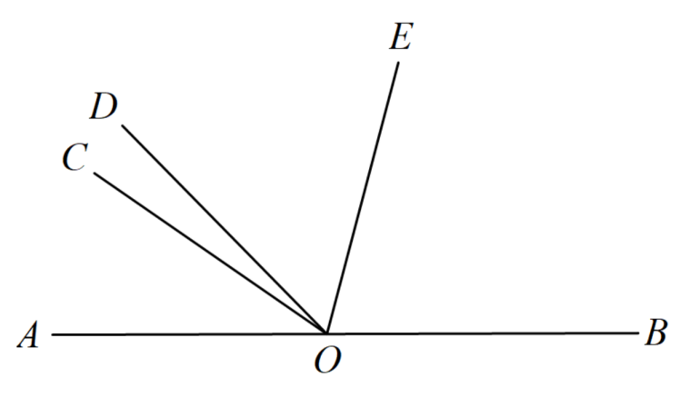
(1)若∠COD=10°，求∠AOC的余角的度数；
(2)若∠AOC=45°，求∠COE的度数．
【答案】(1)∠AOC的余角的度数是60°
(2)∠COE=75°
【分析】（1）先根据∠AOC=3∠COD求出∠AOC，再根据余角的定义求解即可；
（2）先根据∠AOC=3∠COD求出∠COD，进而求出∠BOD，再根据OE平分∠BOD求出∠DOE，然后根据∴∠COE=∠COD+∠DOE计算即可．
【详解】（1）解：∵∠AOC=3∠COD，∠COD=10°，
∴∠AOC=30°，
∵90°−30°=60°，
∴∠AOC的余角的度数是60°．
（2）解：∵∠AOC=3∠COD，∠AOC=45°，
∴∠COD=13∠AOC=15°，
∵点A，O，B在一条直线上，
∴∠AOB=180°，
∴∠BOC=∠AOB−∠AOC=180°−45°=135°，
∴∠BOD=∠BOC−∠COD=135°−15°=120°．
∵OE平分∠BOD，
∴∠DOE=12∠BOD=60° （角平分线定义），
∴∠COE=∠COD+∠DOE=15°+60°=75°．
【点睛】本题考查了角平分线定义的运用，能理解角平分线定义和角与角之间的关系是解此题的关键．
【变式6-3】【问题背景】已知OC是∠AOB内部的一条射线，且∠AOB=3∠AOC．
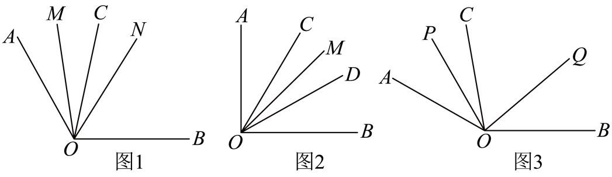
【问题再现】（1）如图1，若∠AOB=120°，OM平分∠AOC，ON平分∠AOB．求∠MON的度数；
【问题推广】（2）如图2，∠AOB=90°，从点O出发在∠BOC内引射线OD，满足∠BOC−∠AOC=∠COD．若OM平分∠COD．求∠BOM的度数；
【拓展提升】（3）如图3，在∠AOC的内部作射线OP，在∠BOC的内部作射线OQ．若∠COP：∠BOQ=1：2；求∠AOP和∠COQ的数量关系．
【答案】（1）40°；（2）45°；（3）∠COQ=2∠AOP
【分析】（1）根据角的平分线，角的和差计算即可．
（2）根据角的平分线，角的和差计算即可．
（3）由∠COP：∠BOQ=1：2，设∠COP=α，则∠BOQ=2α，根据角的平分线，角的和差计算即可．
本题考查了角的和差计算，角的平分线，熟练掌握角的平分线是解题的关键．
【详解】（1）解：∵∠AOB=3∠AOC，∠AOB=120°，
∴∠AOC=13×120°=40°．
又∵OM平分∠AOC，ON平分∠AOB，
∴∠AOM=12∠AOC,∠AON=12∠AOB．
∴∠AOM=40°÷2=20°，∠AON=120°÷2=60°
∴∠MON=∠AON−∠AOM=60°−20°=40°；
（2）解：∵∠AOB=3∠AOC，∠AOB=90°，
∴∠AOC=13×90°=30°．
故∠BOC=90°−30°=60°，
∴∠COD=∠BOC−∠AOC=60°−30°=30°，
又∵OM平分∠COD，
∴∠COM=12∠COD=12×30°=15°．
∴∠BOM=∠BOC−∠COM=60°−15°=45°．
（3）解：由∠COP：∠BOQ=1：2，
设∠COP=α，则∠BOQ=2α
∵∠AOB=3∠AOC，
∴∠AOC=∠AOB−∠BOC=3∠AOC−∠BOC．
∴2∠AOC=∠BOC．
∴2∠AOP+∠COP=∠COQ+∠BOQ，
∴2∠AOP＋α=∠COQ+2α，
∴∠COQ=2∠AOP．
模型7：单角平分线模型
类型 | 单角平分线模型 | |
条件 | 射线OC在∠AOB内，OM平分∠BOC | |
图示 |
|
|
结论 | ∠AOM=∠BOM= 12∠AOB | ∠AOB+∠AOC=2∠AOM |


【模型7 单角平分线模型】
【例7】如图，∠AOC与∠BOC的度数比为4:2，OD平分∠AOB，若∠COD=10°，则∠AOB的度数是 ．

【答案】60°/60度
【分析】本题考查了角平分线的定义、角的运算，设∠AOC=4x，∠BOC=2x，所以∠AOB=∠AOC+∠BOC=6x，由角平分线定义可得∠AOD=12∠AOB=3x，则∠COD=∠AOC−∠AOD=3x−2x=10°，然后求出x的值即可，利用方程思想解决角度计算是解题的关键．
【详解】解：∵∠AOC与∠BOC的度数比为4:2，
∴设∠AOC=4x，∠BOC=2x，
∴∠AOB=∠AOC+∠BOC=6x，
∵OD平分∠AOB，
∴∠AOD=12∠AOB=3x，
∴∠COD=∠AOC−∠AOD=3x−2x=10°，解得：x=10°，
∴∠AOB=6x=6×10°=60°，
故答案为：60°．
【变式7-1】如图所示，已知O是直线AB上一点，∠AOC=48°，OD平分∠BOC，则∠BOD的度数是（ ）

A．64° B．66° C．68° D．72°
【答案】B
【分析】本题考查的是邻补角、角平分线的有关计算，先求出∠BOC，再根据角平分线定义求出结论即可．
【详解】解：∵∠AOC=48°，
∴∠BOC=180°−48°=132°，
∵OD平分∠BOC，
∴∠BOD=12∠BOC=12×132°=66°，
故选：B．
【变式7-2】（24-25七年级上·甘肃定西·期末）如图，已知O是直线AC上一点，OB是一条射线，OD平分∠AOB，OE在∠BOC内，2∠BOE=∠EOC，∠DOE=70°，∠EOC= ．
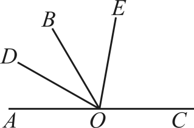
【答案】80°/80度
【分析】本题考查了角平分线的定义，利用方程是解答本题的关键，难度适中．
先设∠AOB为x°，∠BOC为(180−x)°，根据角平分线的定义、∠BOE与∠EOC的关系建立方程解答即可．
【详解】解：设∠AOB为x°，则∠BOC为(180−x)°，
∵OD平分∠AOB，
∴∠DOB=12∠AOB，
则可得∠DOB=12x，
∵2∠BOE=∠EOC，
∴∠BOE=13∠BOC=13(180−x)°，
∵∠DOE=∠DOB+∠BOE=70°
则可得：12x+13(180−x)=70，
解得x=60，
∴∠BOC=180°−60°=120°，
∴∠EOC=23∠BOC=23×120°=80°．
【变式7-3】（25-26八年级上·上海长宁·阶段练习）如图，已知∠AOB=120°，在平面内取一点C，满足∠AOC=α°（120<α<180），以OC为边作等边△COD（OD在OC的逆时针60°方向上），作OM平分∠BOC，∠DOM的度数是 °．（用含α的代数式表示）
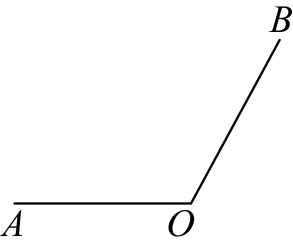
【答案】120−12α或12α−60
【分析】本题主要考查了角平分线定义，等边三角形的性质，解题的关键是熟练掌握等边三角形的性质．分两种情况讨论：当OD在∠AOB的内部时，当OD在∠AOB的外部时，分别画出图形，求出结果即可．
【详解】解：当OD在∠AOB的内部时，如图所示：
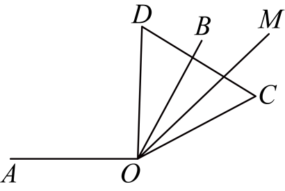
∵△COD为等边三角形，
∴∠COD=60°，
∵∠AOC=α°（120<α<180），∠AOB=120°，
∴∠BOC=∠AOC−∠AOB=α°−120°，
∴∠BOD=∠COD−∠BOC=60°−α°−120°=180°−α°，
∵OM平分∠BOC，
∴∠BOM=12∠BOC=12α°−60°，
∴∠DOM=∠BOD+∠BOM=180°−α°+12α°−60°=120°−12α°；
当OD在∠AOB的外部时，如图所示：
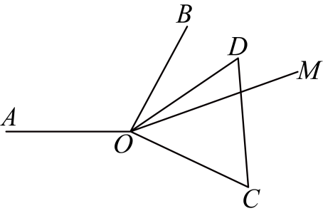
∵△COD为等边三角形，
∴∠COD=60°，
∵∠AOC=α°（120<α<180），∠AOB=120°，
∴∠BOC=360°−∠AOC−∠AOB=360°−α°−120°=240°−α°，
∴∠BOD=∠BOC−∠DOC=240°−α°−60°=180°−α°，
∵OM平分∠BOC，
∴∠BOM=12∠BOC=120°−12α°，
∴∠DOM=∠BOM−∠BOD=120°−12α°−180°−α°=12α°−60°；
综上分析可知：∠DOM的度数是120−12α或12α−60．
故答案为：120−12α或12α−60．
模型8：双角平分线模型
类型 | 双角平分线和型 | 双角平分线差型 |
条件 | OC是∠AOB内的一条射线，OP1，OP2分别是∠AOC，∠BOC的平分线 | OC是∠AOB外的一条射线，OP1，OP2分别是∠AOC，∠BOC的平分线 |
图示 |
| 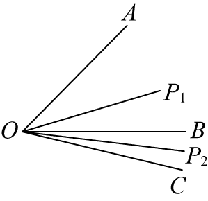 |
结论 | ∠P1OP2=12∠AOB | |

【模型8 双角平分线模型】
【例8】（25-26七年级上·全国·单元测试）如图，有一副三角板△ABC和△ADE，它们的斜边AB和AD按图1所示摆放在直线MN上，∠BAC=30°，∠DAE=45°，已知AP平分∠CAD，AQ平分∠CAE．
(1)求初始位置∠PAE的度数．
(2)若将三角板ADE绕点A转到如图2位置，使∠DAN=α，且0°<α<45°，求∠PAQ的度数．
(3)在（2）的基础上，若继续将三角板ABC绕点A转动到图3位置，使∠MAB=23α，求∠PAD与∠BAN存在的等量关系．
【答案】(1)30°
(2)22.5°
(3)4∠PAD−∠BAN=120°
【分析】本题主要考查了角平分线的定义、角的计算等内容，熟练掌握相关知识是解题的关键．
（1）由补角的定义得到∠CAD=150°，再根据角平分线的定义得到∠PAD=12∠CAD=75°，然后利用角的和差求解即可；
（2）同（1）思路一致，利用∠PAQ=∠PAC−∠QAC，分别求出∠PAC和∠QAC即可得解；
（3）由题易得∠BAN=180°−∠MAB=180°−23α，∠PAD=12∠CAD=75°−16α，根据两式关系消去α即可的解．
【详解】（1）解：∵∠BAC=30°，
∴∠CAD=150°，
∵AP平分∠CAD，
∴∠PAD=12∠CAD=75°，
∵∠EAD=45°，
∴∠PAE=∠PAD−∠EAD=30°；
（2）解：∵∠BAC=30°，∠DAN=α，∠DAE=45°，
∴∠CAD=180°−∠BAC−∠DAN=150°−α，∠CAE=180°−∠BAC−∠DAN−∠DAE=105°−α，
∵AP平分∠CAD，AQ平分∠CAE，
∴∠PAC=12∠CAD=75°−12α，∠QAC=12∠CAE=52.5°−12α，
∴∠PAQ=∠PAC−∠QAC=22.5°；
（3）解：∵∠BAC=30°，∠MAB=23α，
∴∠CAM=30°−23α，∠BAN=180°−∠MAB=180°−23α，
∴∠CAD=180°−∠CAM−∠DAN=180°−30°+23α−α=150∘−13α，
∵AP平分∠CAD，
∴∠PAD=12∠CAD=75°−16α，
∴4∠PAD=300°−23α，
∴4∠PAD−∠BAN=120°．
【变式8-1】（25-26七年级上·河北石家庄·期中）如图，在∠AOC中，∠AOB是直角，∠BOC=70∘，射线OE平分∠AOC，射线OF平分∠BOC，则∠EOF的度数为 ．

【答案】45°
【分析】本题主要考查了角的和差、角的平分线等知识点，弄清角之间的关系是解题的关键．
由直角的定义、角的和差可得∠AOC=160°，再根据角平分线的定义可得∠COE=80°、∠BOF=35°，再求得∠BOE=10°，最后根据角的和差即可解答．
【详解】解：∵∠AOB是直角，
∴∠AOB=90°，
∴∠AOC=∠AOB+∠BOC=90°+70°=160°，
∵射线OE平分∠AOC，
∴∠COE=12∠AOC=80°，
∴∠BOE=∠COE−∠BOC=10°，
∵射线OF平分∠BOC，
∴∠BOF=12∠BOC=35°，
∴∠EOF=∠BOE+∠BOF=45°．
故答案为：45°．
【变式8-2】（24-25七年级上·陕西西安·期末）如图，在∠AOC中，射线OE平分∠AOC，连接OB，射线OF平分∠BOC．

(1)若∠AOB是直角，∠BOC=70°，求∠EOF的度数；
(2)若∠AOC+∠EOF=170°，∠BOC=80°，则∠COE是多少度？
【答案】(1)45°
(2)70°
【分析】本题考查与角平分线有关的计算，找准角之间的和差关系是解题的关键：
（1）根据直角结合角的和差关系得到∠AOC的度数，角平分线求出∠COE,∠COF的度数，再根据角的和差关系进行求解即可；
（2）根据角平分线和角的和差关系推出3∠COE−40°=170°，即可得出结果．
【详解】（1）解：∵∠AOB是直角，
∴∠AOB=90°，
∴∠AOC=∠AOB+∠BOC=160°，
∵射线OE平分∠AOC，射线OF平分∠BOC，
∴∠COE=12∠AOC=80°，∠COF=12∠BOC=35°，
∴∠EOF=∠COE−∠COF=45°；
（2）∵射线OE平分∠AOC，射线OF平分∠BOC，
∴∠COF=12∠BOC=40°，∠AOC=2∠COE，
∵∠AOC+∠EOF=170°，
∴2∠COE+∠COE−∠COF=170°，即：3∠COE−40°=170°，
∴∠COE=70°．
【变式8-3】如图1，将一副直角三角尺的顶点叠在一起放在点O处，∠BOA=90°，∠COD=60°，OC与OB重合，OD在∠AOB外，射线OM、ON分别是∠AOC、∠BOD的角平分线

(1)求∠MON的度数；
(2)如图2，若保持三角尺AOB不动，三角尺COD绕点O逆时针旋转n°（0<n<90°且n≠60°）时，其他条件不变，求∠MON的度数；
(3)直接写出∠COD绕点O逆时针旋转n°（0<n<360°且n≠90°,n≠60°）时∠MON的值；
(4)在旋转的过程中，当∠AOC+∠BOD=120°时，直接写出∠BOC的值．
【答案】(1)75°
(2)75°
(3)75°
(4)15°或135°．
【分析】此题考查了角平分线的定义、角的和差等知识．
（1）根据角平分线的定义得到∠COM=12∠AOC=45°，∠BON=12∠BOD=30°，即可得到答案；
（2）根据角平分线的定义得到∠COM=45°−12n°，然后分两种情况：当0<n<60°时，∠BOD=60°−n°；当60°<n<90°时，∠BOD=n°−60°，即可求出答案；
（3）根据角平分线的定义即可求出答案；
（4）分两种情况求出答案即可．
【详解】（1）解：∵∠BOA=90°，∠COD=60°，射线OM、ON分别是∠AOC、∠BOD的角平分线，
∴∠COM=12∠AOC=45°，∠BON=12∠BOD=30°，
∴∠MON=∠COM+∠BON=75°；
（2）解：∵∠BOA=90°，∠COD=60°，∠BOC=n°， `
∴∠AOC=90°−n°，
∵射线OM是∠AOC的角平分线，
∴∠COM=12∠AOC=1290°−n°=45°−12n°，
当0<n<60°时，∠BOD=60°−n°，
∵射线ON是∠BOD的角平分线，
∴∠BON=12∠BOD=1260°−n°=30°−12n°，
∴∠MON=∠COM+∠BON+∠BOC=45°−12n°+30°−12n°+n°=75°；
当60°<n<90°时，∠BOD=n°−60°，
∵射线ON是∠BOD的角平分线，
∴∠DON=12∠BOD=12n°−60°=12n°−30°，
∴∠MON=∠COM+∠DON+∠DOC=45°−12n°+12n°−30°+60°=75°；
综上所述，∠MON的度数为75°；
（3）解：当0<n<90°时，
∵射线OM、ON分别是∠AOC、∠BOD的角平分线，∠AOB=90°,∠COD=60°，
∴∠COM=12∠AOC=1290°−n°=45°−12n°，∠BON=12∠COD−∠BOC=1260°−n°=30°−12n°，
∴∠MON=∠COM+∠BON+∠BOC=45°−12n°+30°−12n°+n°=75°，
当90°<n<180°时，
∵射线OM、ON分别是∠AOC、∠BOD的角平分线，∠AOB=90°,∠COD=60°，
∴∠AOM=12∠AOC=12n°−90°=12n°−45°，∠DON=12∠BOD=12n°−60°=12n°−30°，∠AOD=150°−n°，
∴∠MON=∠AOM+∠AOD+∠DON=12n°−45°+150°−n°+12n°−30°=75°，
当180°<n<360°时，
∵射线OM、ON分别是∠AOC、∠BOD的角平分线，∠AOB=90°,∠COD=60°，
∴∠COM=12∠AOC=12450°−n°=225°−12n°，∠DON=12∠BOD=12420°−n°=210°−12n°，
∴∠CON=∠DON−∠COD=210−12n°−60°=150°−12n°，
∴∠MON=∠COM−∠CON=225°−12n°−150°−12n°=75°，
综上可知，∠MON的度数恒为75°，与旋转角度n°无关；
（4）解：当0<n<90°时，
由叠合可得∠AOC+∠BOD+2∠BOC=∠AOB+∠COD=150°，
∴∠BOC=12(150°−120°)=15°．
由（3），当90°<n<180°时，∠AOC+∠BOD=n°−90°+n°−60°=120°，
∴n°=135°，
∴∠BOC=135°，
当180°<n<360°时，∠AOC+∠BOD=450°−n°+420°−n°=120°，
∴n°=375°>360°（舍去），
∴∠BOC的值为15°或135°．